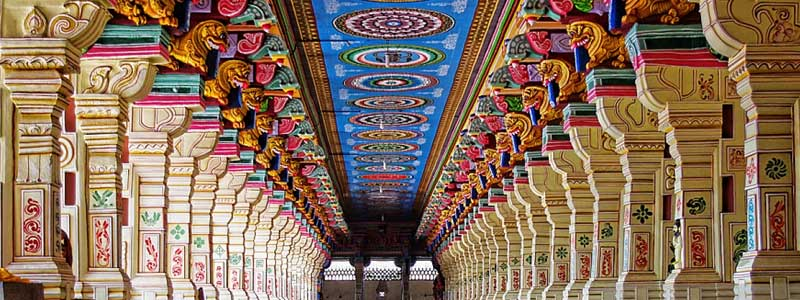
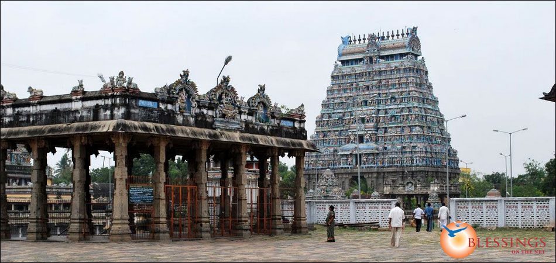

Ramanathaswamy Temple in Rameshwaram is one of the 12 Jyotirlinga temples and a holy pilgrimage site for the Hindus. It is believed that the Shiva Lingam placed at the temple was built and worshipped by Lord Ram before crossing the bridge to Lanka, and that is where the name Ramanathaswamy was derived. Lord Ram wanted to seek forgiveness from his lord for the sins he would commit during the war against Ravana. He requested Hanuman to bring a Lingam from the Himalayas. However, with his delayed arrival, Lord Ram decided to build a Lingam from sand, which is placed at the sanctum. The temple has another lingam which was brought from Kailash and is called Vishwalingam. Click here to know more
The temple is dedicated to the Nataraja avatar of Lord Shiva, a divine dancer. It is among the famous ancient temples in Tamil Nadu known for their religious and architectural significance. People believe that this temple is located at the centre of Earth’s magnetic field. The temple was built in the 11th century during the Pallava rule. It is one of the Pancha Bhoota Sthalas dedicated to the five elements of the universe and signifies the element Space. Click here to know more
Meenakshi Amman Temple, located in Madurai, is one of the famous Shiva temples in Tamil Nadu which was built during the Nayak rule. It is dedicated to Goddess Parvati as Meenakshi and her consort Lord Shiva as Sundareshwar. All the important festivals of Tamil Nadu are celebrated here with great pomp and show, especially the Chithirai Festival. It signifies the celestial marriage of Meenakshi and Sundareswarar. Click here to know more